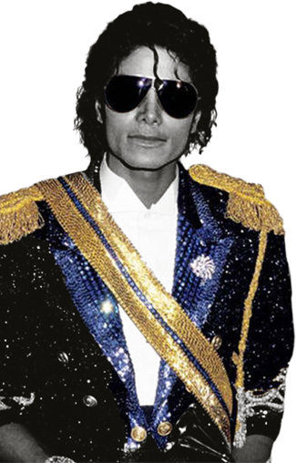

Super Bowl XXVII 1993
Michael’s meest toegejuichde optreden, waarop hij zijn ‘Aviator Sunglasses’ droeg,
was deze van de half-time show tijdens de Super Bowl XXVII. Na dit optreden nam niet alleen het aantal kijkers van de Super Bowl toe,
maar zijn Dangerous album steeg liefst 90 plaatsen in de hitparades.
“Als je mij vraagt waarom ik zo vaak zonnebrillen draag, dan is het simpelweg omdat ik er niet van hou om telkens mensen in de ogen te kijken.
Het is een manier om mezelf af te gaan schermen van de buitenwereld.
Ik heb zo weinig privacy in mijn leven en deze zonnebril is een manier om mijzelf toch een beetje privacy te verschaffen.”
>
BEAT IT
Bad vervolg op Beat It
De muziekvideo, geregisseerd door Martin Scorcese,
van Michael’s ‘Bad’ is in vele opzichten een sequel op zijn eerdere hit ‘Beat It’.
Beide verhalen zijn geïnspireerd door West Side Story.
Niet enkel het verhaal, maar ook de kledij volgen elkaar op.
Het zwarte leren jacket van MJ is eigenlijk een soort van toegetakelde versie van de lederen jas die hij droeg in Beat It.
The more you know..
<

The Penny Loafers
In ‘The way you make me feel’ draagt Michael Jackson voor het eerst zijn Penny Loafers. Het is niet helemaal zeker,
maar volgens bronnen had Michael schoenmaat UK 10, wat neerkomt op maatje 44.5 in Europa. Een paar van deze schoenen werd uiteindelijk verkocht voor $66.000.
Naast deze zwarte Penny Loafers draagt hij in de clip witte kousen.
Tijdens zijn tour onstond het probleem dat zijn dansmoves niet helemaal te volgen waren voor mensen die achteraan zaten. Dit lostte Michael op,
op een manier waar enkel hij zou kunnen aan denken.
Hij liet speciale kousen maken, met 5.000 handgenaaide glasdiamanten. Zo kon hij toch gezien worden.
Onafscheidelijk met de Penny Loafers en de glitterende kousen was zijn ‘Floods’. Daarmee doelde Michael op zijn opgerolde broek.
Niet alleen kwamen zijn dansmoves zo beter naar voren, maar ook bracht hij op die manier hommage aan één van zijn grote voorbeelden en inspiraties: Gene Kelly.
The way you make me feel 1987